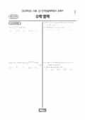

문제지

전국연합학력평가 · 시·도교육청 주관
2023년 10월 고3 학력평가 수학 미적분 1등급컷은 원점수 81점(추정), 표준점수 최고점은 150점입니다.
원점수 1등급컷은 공식 발표값이 아니라 EBSi·입시기관 값입니다. 등급별 값은 등급컷 표, 출처 구분은 데이터 원칙에 있습니다.

시험지를 먼저 풀어 보세요. 등급컷·표준점수·난이도는 흐리게 가려 뒀어요.
| 등급 | 원점수 | 표준점수 | 백분위 |
|---|---|---|---|
| 1 | 81 | 135 | 96 |
| 2 | 71 | 127 | 88 |
| 3 | 60 | 118 | 76 |
| 4 | 45 | 106 | 60 |
| 5 | 24 | 89 | 40 |
| 6 | 13 | 80 | 22 |
| 7 | 10 | 77 | 10 |
| 8 | 7 | 75 | 4 |
등급별 컷 · 입시기관 3곳 원점수 추정 종합(이투스·종로학원·대성마이맥) · 공통+선택 점수 조합에 따라 다를 수 있음 · 만점 100점
| 등급 | 표준점수 이상 | 인원(명) | 비율 |
|---|---|---|---|
| 1 | 135 | 9,569 | 4.03% |
| 2 | 127 | 18,361 | 7.73% |
| 3 | 118 | 29,573 | 12.46% |
| 4 | 106 | 38,206 | 16.09% |
| 5 | 89 | 48,438 | 20.4% |
| 6 | 80 | 43,901 | 18.49% |
| 7 | 77 | 33,179 | 13.97% |
| 8 | 75 | 8,511 | 3.58% |
| 9 | 67 | 7,700 | 3.24% |
수학 영역 전체 응시자 기준이에요.
출처: 시·도교육청이 공개한 전국연합학력평가 성적 분석·통계자료(공개 자료 보기).
EBSi 응답자 기준으로 가장 많이 틀린 문항은 22번(4점, 주관식)이고, 오답률은 94%입니다. 오답률 50%를 넘은 문항은 12개입니다.
| 순위 | 문항 | 배점 | 오답률 | 정답 | 많이 고른 오답 |
|---|---|---|---|---|---|
| 1 | 22번 | 4점 | 94% | 29 | 주관식 |
| 2 | 30번 | 4점 | 91% | 91 | 주관식 |
| 3 | 21번 | 4점 | 87% | 6 | 주관식 |
| 4 | 20번 | 4점 | 86.2% | 24 | 주관식 |
| 5 | 29번 | 4점 | 74.9% | 30 | 주관식 |
| 6 | 15번 | 4점 | 73.8% | ② | ④ 23.7% |
| 7 | 28번 | 4점 | 70.4% | ④ | ③ 18.7% |
| 8 | 19번 | 3점 | 66% | 102 | 주관식 |
| 9 | 13번 | 4점 | 65.3% | ② | ④ 23.2% |
| 10 | 14번 | 4점 | 61.4% | ③ | ⑤ 31.4% |
| 11 | 27번 | 3점 | 55.9% | ① | ③ 21.3% |
| 12 | 11번 | 4점 | 54.6% | ① | ③ 25.1% |
| 13 | 9번 | 4점 | 45.7% | ① | ③ 14% |
| 14 | 10번 | 4점 | 40.6% | ④ | ③ 14.1% |
| 15 | 12번 | 4점 | 39.1% | ⑤ | ③ 13.9% |
EBSi 가채점 응답자 기준 · 전 문항 중 오답률 상위 15문항
출처: EBSi 역대 등급컷·오답률 공개 화면. 가채점에 참여한 EBSi 이용자 응답이라 전체 응시자 정답률과는 다를 수 있습니다.
발행 기관: 시·도교육청(전국연합학력평가). 파일 위치: 이 사이트가 보관한 사본. 저작권은 발행 기관에 있습니다. 원본과 다르거나 게시 중단이 필요하면 연락처로 알려 주세요. 등급컷 출처 구분은 데이터 원칙에서 설명합니다.
막대 색은 역대 대비 난이도 · 진한 막대가 이 시험 · 막대를 누르면 그 회차로 이동
| 회차 | 1등급컷 | 표점 최고 | 1등급 표점 | 난이도 |
|---|---|---|---|---|
| 10월 학평2023년 고3이 시험 | 81 | 150 | 135 | 쉬움 |
| 7월 학평2023년 고3 | 77 | 157 | 136 | 어려움 |
| 4월 학평2023년 고3 | 73 | 162 | 136 | 어려움 |
| 3월 학평2023년 고3 | 77 | 159 | 138 | 어려움 |
| 10월 학평2022년 고3 | 78 | 154 | 136 | 보통 |
| 7월 학평2022년 고3 | 81 | 152 | 136 | 쉬움 |
| 4월 학평2022년 고3 | 75 | 160 | 138 | 매우 어려움 |
| 3월 학평2022년 고3 | 75 | 165 | 141 | 매우 어려움 |
| 10월 학평2021년 고3 | 75 | 163 | 140 | 매우 어려움 |
| 7월 학평2021년 고3 | 85 | 144 | 135 | 쉬움 |
공통과목 22번(4점, 94.0%)은 삼차함수로 구간을 나누어 정의한 함수가 미분가능할 조건을 다룬 문항, 21번(4점, 87.0%)은 선분 BC를 지름으로 하는 원에 내접하는 두 삼각형에서 사인값을 이용해 길이를 구하는 문항, 20번(4점, 86.2%)은 모든 실수에 대해 등식을 만족시키는 다항함수 문항이었습니다.
객관식 15번(73.8%)은 조건에 따라 다음 항이 정해지는 자연수 수열 문항, 3점짜리 19번(66.0%)은 수직선 위를 움직이는 두 점 P, Q의 속도를 다룬 문항이었습니다.
미적분 30번(4점, 91.0%)은 두 정수로 정의한 함수가 극값을 가질 조건과 극값을 갖는 점의 합을 다룬 문항, 29번(74.9%)은 원과 삼각형으로 만든 도형 문항, 28번(70.4%)은 사인·코사인으로 정의한 함수의 조건 문항이었습니다.
미적분 30번처럼 두 정수로 정의한 함수가 극값을 가질 조건은 도함수의 부호가 바뀌는 지점을 정수 범위에서 하나씩 확인하는 방식으로 접근해야 합니다. 수능 직전이라면 공통 22번 같은 구간별 미분가능성 조건(경계에서 함숫값·미분계수 일치)을 빠르게 식으로 세우는 연습을 함께 해 두세요.